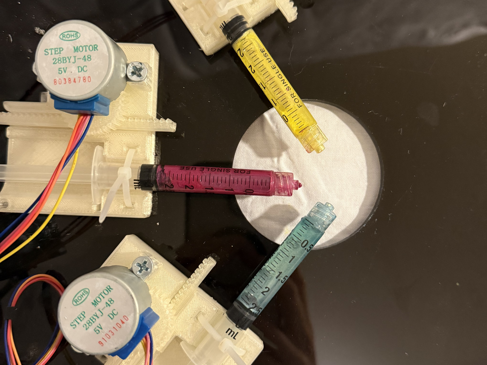
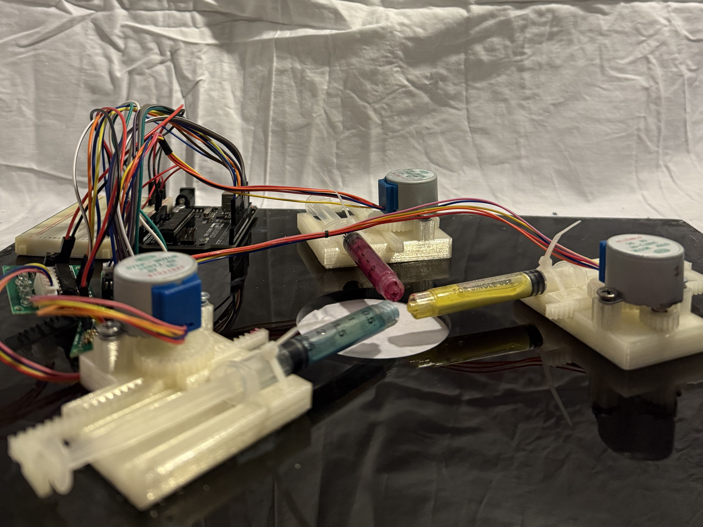
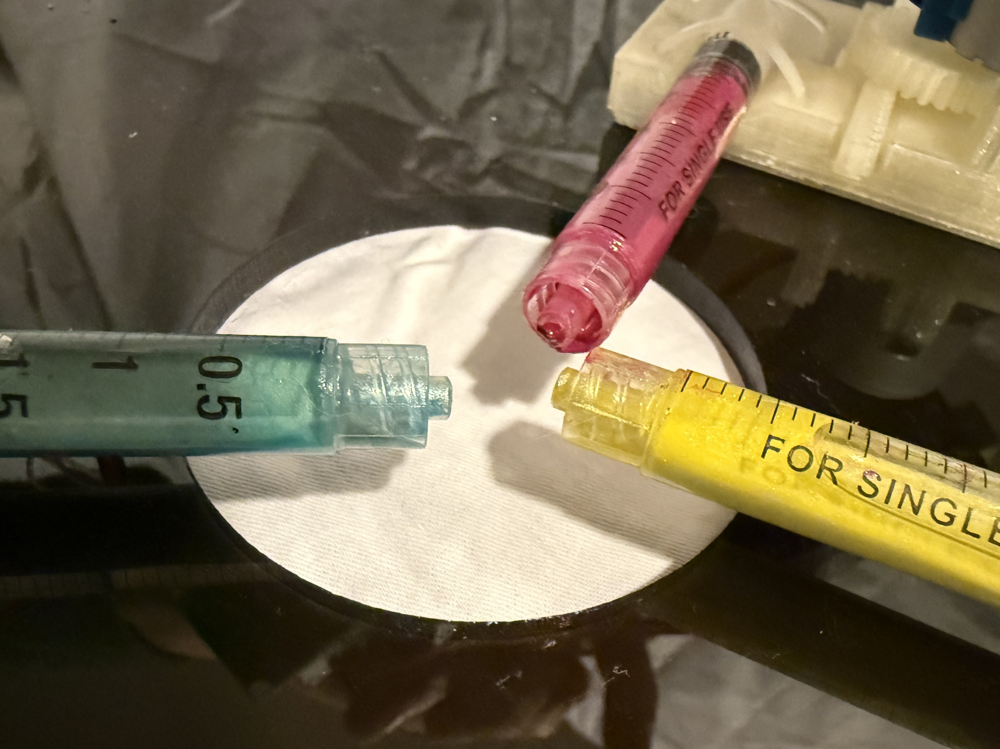
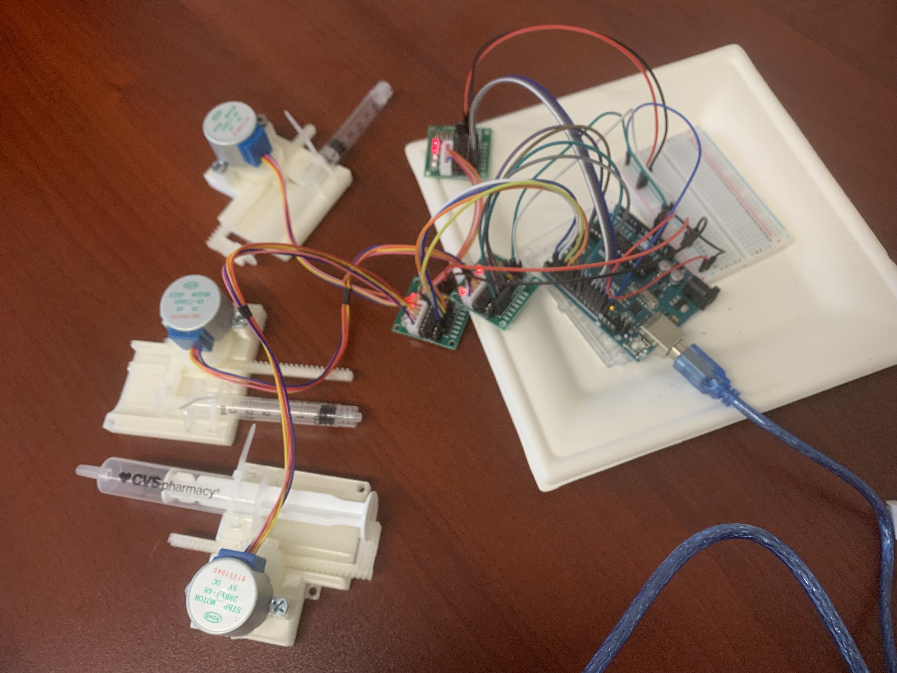
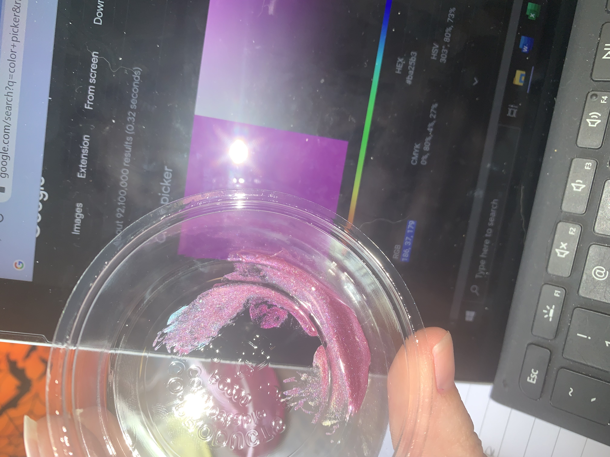

Prototype final



Processus
Fabrication et tests




Il s’agissait du premier projet d’ingénierie du design que j’ai réalisé, seulement quelques semaines après avoir appris les bases de la CAO 3D et de l’impression 3D. Même si je n’avais pas encore développé de processus de design ou de documentation complet, ce projet a éveillé mon intérêt pour le design comme outil complémentaire à mon travail technologique.